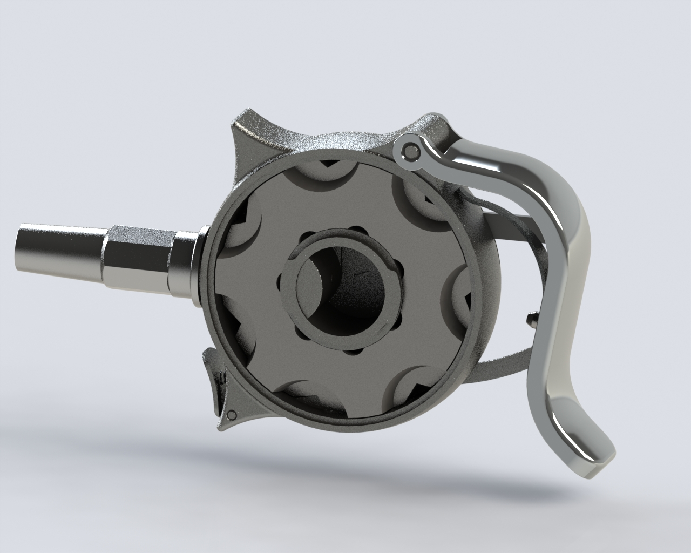
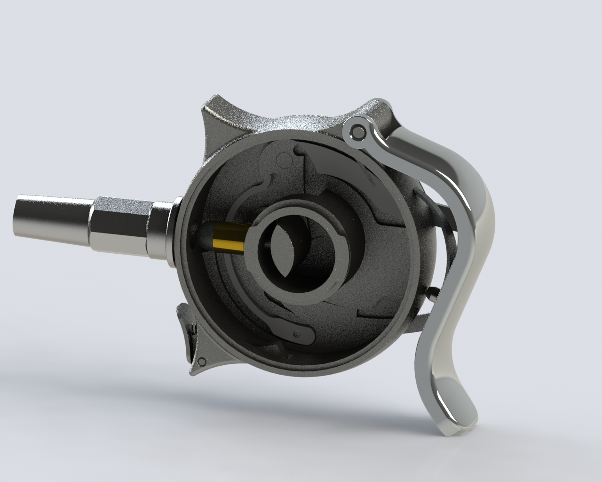
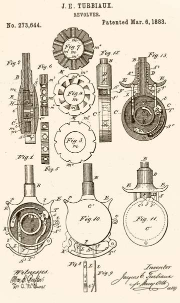
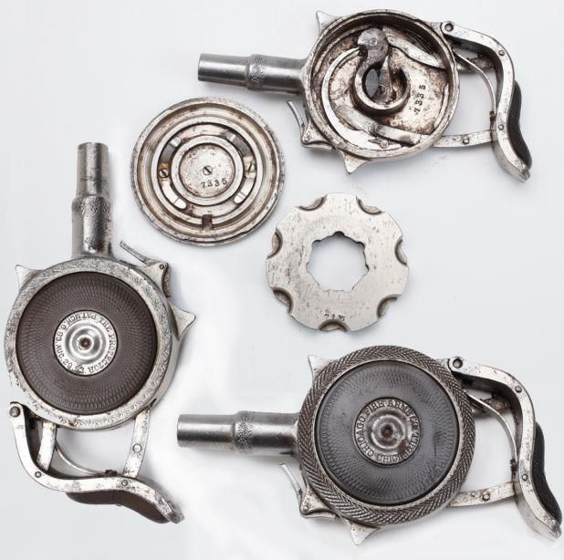

CAD Model Portfolio of Teruteru
Protector 8mm
Le Protector 8mm palm pistol (ca.1890)

(from Wikipedia) The Protector Palm Pistol was first patented and built in France in 1882 by Jacques Turbiaux and sold as the "Turbiaux Le Protector" or the "Turbiaux Disc Pistol". Later in 1883 it was built in the USA as The Protector by Minneapolis Firearms Co.. Peter H. Finnegan of Austin, Illinois bought the patent in 1892 and founded the Chicago Fire Arms Co. to make and market the pistols. In anticipation of the World's Columbian Exposition in 1893, he contracted the Ames Sword Company of Chicopee, Massachusetts to manufacture 15,000 pistols. Ames made 1,500 of the pistols by the deadline of the exhibition. Finnegan sued for damages and engaged in a lawsuit with Ames. The company countersued and settled with Finnegan, but, through the years, had amassed a large production run of 12,800 pistols. The company sold the inventory and abandoned the design by 1910.[2][3][4] Remington manufactured the rimfire ammunition for this pistol, 32 Extra Short and alternatively 32 Protector, until 1920.[5] Most Protectors were nickel-plated to prevent corrosion from being carried in close contact with the owner. These guns were shipped with hard rubber inserts for additional protection. Some varieties came with pearl inlays and a small percentage were blued.[1]
Download ZIP


